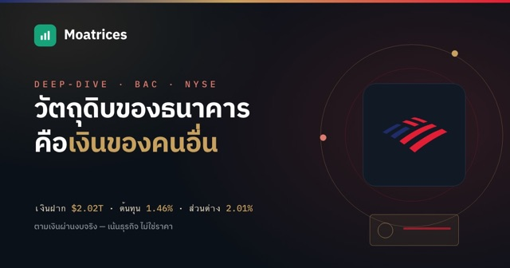
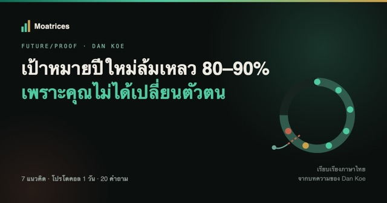

STAY CURIOUS. KEEP QUESTIONING.
ธุรกิจหนึ่งแห่ง
อาจเปลี่ยนวิธีมองทั้งตลาด
เริ่มจากบริษัทที่คุณสงสัย แล้วค่อย ๆ หาคำตอบไปด้วยกัน
เลือกธุรกิจที่อยากเข้าใจTHE COLLECTED SERIES
ค่อย ๆ ต่อภาพใหญ่
ทีละซีรีส์
เก็บความคิดเป็นชุด ค่อย ๆ อ่านให้ลึกขึ้น
7 ซีรีส์ว่าด้วยธุรกิจ การลงทุน และการตัดสินใจ
เคสศึกษา
ทาบเรื่องเล่าธุรกิจกับหลักฐาน แล้วตามหากลไกที่สร้างผลตอบแทน
เปิดอ่านซีรีส์ดีลที่สร้างบัฟเฟตต์
ถอดวิธีคิดผ่าน See’s, GEICO และอีก 3 ดีล พร้อมตัวเลขจริง
เปิดอ่านซีรีส์7 Powers
เข้าใจคูเมืองทั้ง 7 แบบของ Hamilton Helmer ผ่านธุรกิจที่คุณรู้จัก
เปิดอ่านซีรีส์อ่านงบแบบลงมือทำ
เชื่อมกำไร กระแสเงินสด และงบดุล ให้กลายเป็นภาพธุรกิจเดียวกัน
เปิดอ่านซีรีส์คูเมืองแตก
เรียนรู้จุดเปลี่ยนของ Kodak, Nokia, Intel, GE และ Boeing
เปิดอ่านซีรีส์Buffett Talks
5 สุนทรพจน์คลาสสิก ว่าด้วยธุรกิจ ตลาด และการตัดสินใจลงทุน
เปิดอ่านซีรีส์Munger Talks
เชื่อมศาสตร์หลายแขนง รู้ทันอคติ และฝึกตัดสินใจให้ดีขึ้น
เปิดอ่านซีรีส์Bookshelf
หนังสือธุรกิจ การลงทุน และกรอบคิด พร้อมบทสรุปให้อ่านต่อ
เปิดชั้นหนังสือมองให้ลึกกว่าราคา
จากสิ่งที่ตลาดมองเห็น
สู่สิ่งที่ทำให้ธุรกิจยืนระยะ
Select a layer. Explore a different perspective.
ความได้เปรียบที่ต้องพิสูจน์
อะไรทำให้ลูกค้าเลือกธุรกิจนี้ต่อ และคู่แข่งเลียนแบบได้ยากเพราะอะไร
Research Overview.
เข้าใจธุรกิจ ติดตามคูเมือง และทบทวนสิ่งที่เราเชื่อ
-
ผ่าธุรกิจ BAC (Bank of America) — วัตถุดิบคือเงินของคนอื่น
ธนาคารหาเงินจากส่วนต่างดอกเบี้ยแค่ 2.01% — แต่คูเมืองไม่ได้อยู่ที่ส่วนต่าง มันอยู่ที่ว่าทำไม 69 ล้านคนถึงยอมฝากเงินไว้ในราคาถูกขนาดนั้น ปีแล้วปีเล่า

อ่านต่อ → -
ซ่อมชีวิตทั้งใบใน 1 วัน — โปรโตคอลหนึ่งวันของ Dan Koe
ทำไมเป้าหมายปีใหม่ถึงล้มเหลว 80-90% และจะเปลี่ยนตัวตนจริงๆ ได้ยังไง — เรียบเรียงไทยจาก Dan Koe พร้อมโปรโตคอลหนึ่งวันเต็ม

อ่านต่อ → -
Situational Awareness — เมื่อ AI เปลี่ยนกติกาโลก
เอกสาร 165 หน้าที่บอกว่าภายในปี 2027 โมเดลจะทำงานของนักวิจัย AI ได้เอง อ่านเหตุผลเบื้องหลังทีละขั้น แล้วตั้งคำถามกับสมมติฐาน ผ่าน 6 ฉาก Interactive
 อ่านต่อ →
อ่านต่อ →
-
Tesla Robotaxi — รถเริ่มวิ่งแล้ว คูเมืองเริ่มเกิดหรือยัง?
รถไร้พวงมาลัยเริ่มรับผู้โดยสารแล้ว แต่คูเมืองเกิดหรือยัง? ดูแบบร่างห้องโดยสาร Cybercab แล้วลองเปลี่ยนการวิ่งเปล่าให้เป็นเงิน ผ่าน 5 ฉาก Interactive
 อ่านต่อ →
อ่านต่อ →
-
สามแฟ้มธุรกิจ — เบื้องหลังบริษัทที่เราคิดว่ารู้จัก
ร้านที่ขายถูก บริการที่เก็บเงินรายเดือน และเครื่องจักรที่ทำแทนยาก — ตามรอยหลักฐานในสามแฟ้ม แล้วพบว่าข้อดีของธุรกิจซ่อนจุดเปราะอะไรไว้
 อ่านต่อ →
อ่านต่อ →
-
เมื่อคนขายชิปต้องค้ำค่าเช่า — Land, Power & Shell
ก่อนนับ GPU ให้นับเงื่อนไขที่ขาดอยู่ — ที่ดิน อาคาร และไฟฟ้าจะกลายเป็นผลตอบแทนได้เมื่อไร และใครต้องจ่ายบิลหากผู้เช่าไปต่อไม่ไหว พร้อมภาพโครงสร้างพื้นฐานและตัวทดลองที่เล่นได้ในบทความ
 อ่านต่อ →
อ่านต่อ →